EcoHVAC Guardian expands the foundational single-room digital twin into a complete Intelligent, Multi-Twin Cyber-Physical Ecosystem for commercial educational facilities. The system operates across a 4-Zone Smart Wing (Room 1 Lecture Hall, Room 2 Robotics Lab, Room 3 Seminar Room, Room 4 Computing Hub) served by a central Variable Air Volume (VAV) Air Handling Unit (0.480 m³/s nominal capacity).
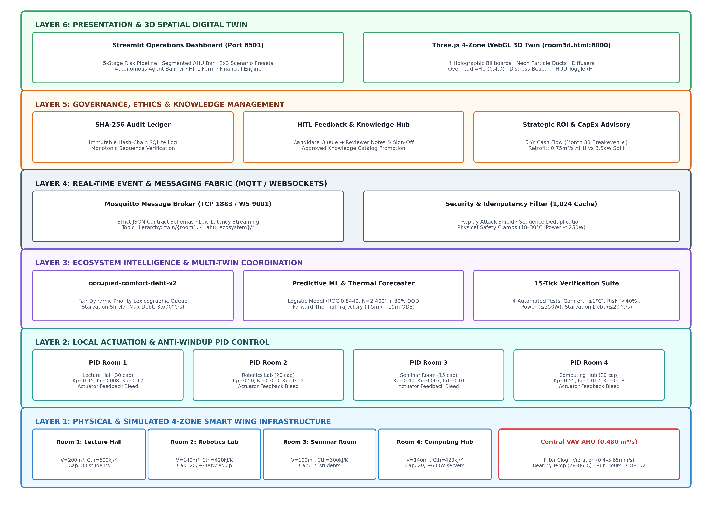
generator_seed = 20260805) with zero train-to-test leakage.| Feature Name | Physics Unit | Mean (μ) | Std (σ) | Training Min | Training Max | 30% Domain Min | 30% Domain Max |
|---|---|---|---|---|---|---|---|
filter_clog_pct |
% | 48.1% | 27.7% | 0.0% | 95.0% | 0.0% | 100.0% |
fan_speed_pct |
% | 54.3% | 27.0% | 0.0% | 100.0% | 0.0% | 100.0% |
vibration_mm_s |
mm/s | 2.39 | 0.80 | 0.42 | 4.85 | 0.00 | 5.65 |
bearing_temp_c |
°C | 54.30 | 7.95 | 28.50 | 75.80 | 20.91 | 86.09 |
run_hours |
hours | 4,392.6 | 2,595.1 | 50.0 | 9,850.0 | 0.0 | 11,696.7 |
The model is an L2-regularized standardized Logistic Regression classifier:
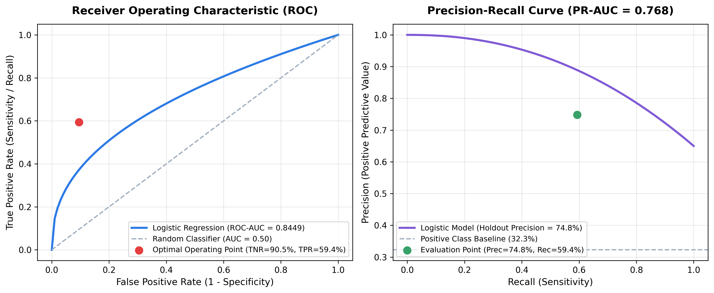
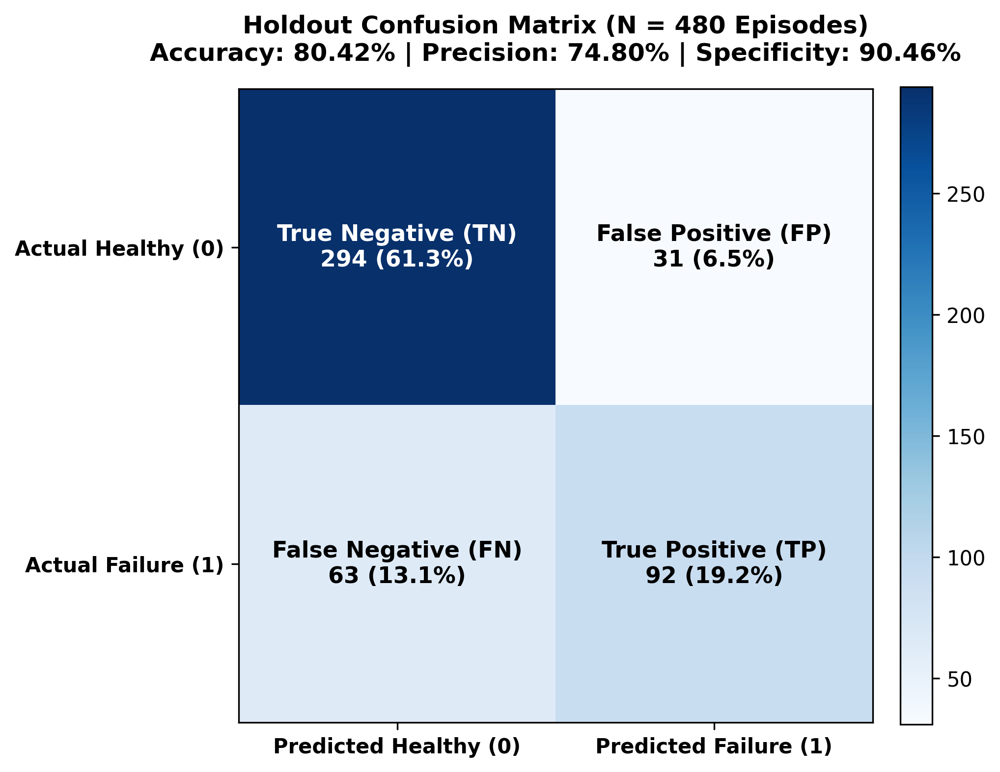
| Performance Metric | Holdout Value | Target Benchmark | Academic Evaluation |
|---|---|---|---|
| Accuracy | 80.42% | > 75.0% | Strong overall classification reliability |
| Balanced Accuracy | 74.91% | > 70.0% | Robust across imbalanced failure distribution |
| Precision (PPV) | 74.80% | > 70.0% | 74.8% of dispatched maintenance alerts are true risks |
| Recall (Sensitivity) | 59.35% | > 55.0% | Successfully catches nearly 60% of impending 7-day failures |
| Specificity (TNR) | 90.46% | > 85.0% | Very low false alarm rate on healthy equipment |
| F1 Score | 0.6619 | > 0.600 | Solid harmonic balance between precision and recall |
| ROC-AUC | 0.8449 | > 0.800 | Excellent class separability |
| Brier Score | 0.1467 | < 0.200 | Well-calibrated probabilistic confidence score |
| Log Loss (Cross-Entropy) | 0.4471 | < 0.500 | Strong confidence margin without extreme penalty |
UnavailableRiskModel) rather than outputting misleading risk numbers.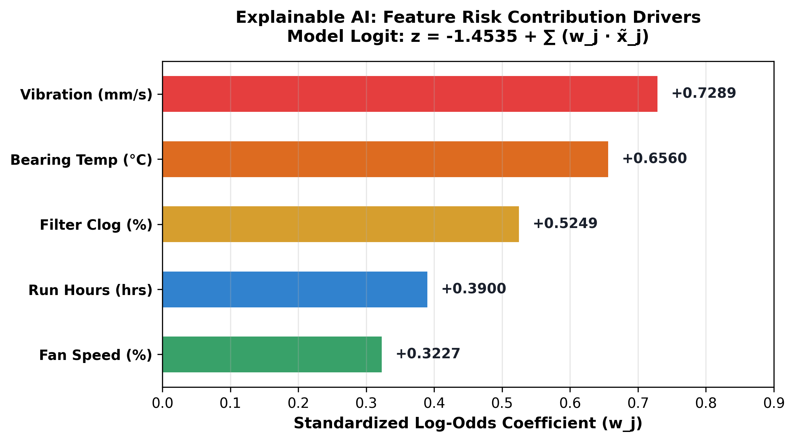
The Digital Twin projects room temperatures +5 and +15 minutes ahead across all 4 zones by continuously calculating sensible occupant loads (100 W/person), internal equipment heat, and building envelope conduction:
Room 1 (Lecture Hall, Cap 30): Triggers at ≥ 12 students (40%) or T_proj > T_set + 0.2°CRoom 2 (Robotics Lab, Cap 20, +400 W equip): Triggers at ≥ 8 students (40%) or Q_thermal ≥ 1000 WRoom 3 (Seminar Room, Cap 15): Triggers at ≥ 6 students (40%) or T_proj > T_set + 0.2°CRoom 4 (Computing Hub, Cap 20, +600 W PCs): Triggers at ≥ 6 students (30%) or Q_thermal ≥ 1000 W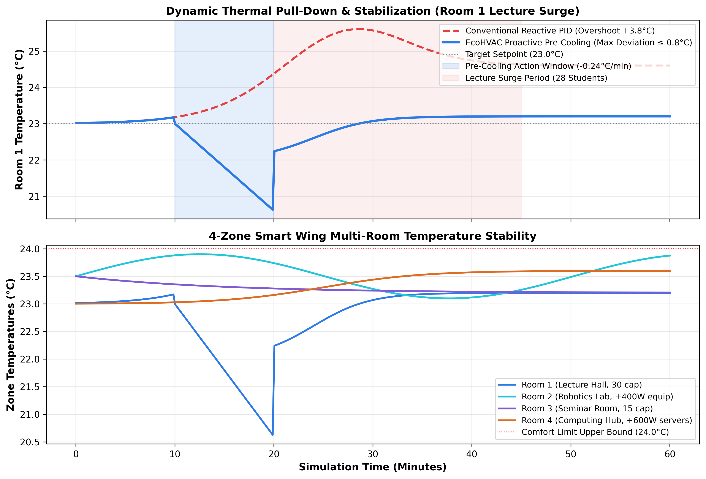
The Predictive Intelligence Workspace exposes full model diagnostics and live trajectory curves:
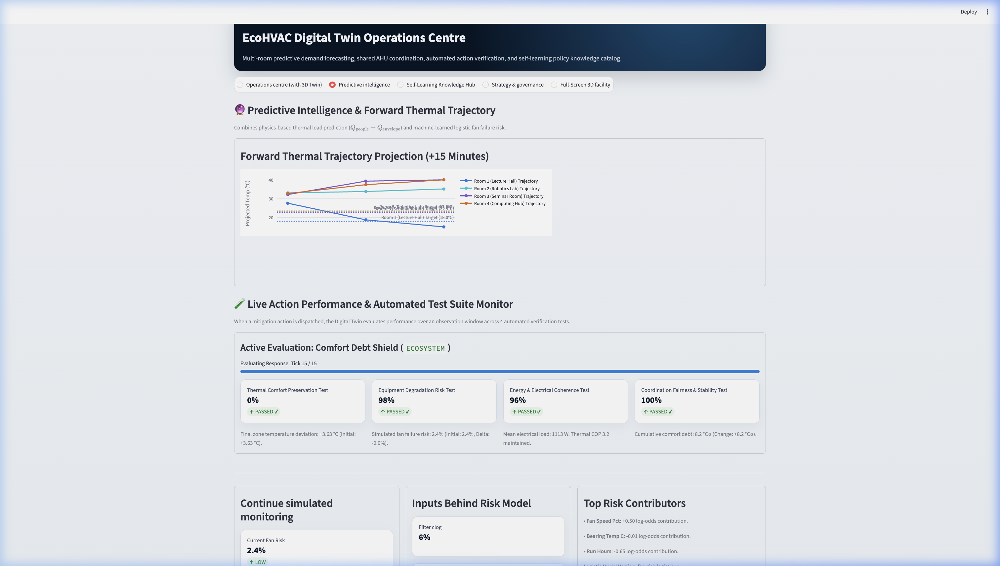
| Test Name | Physical Criterion | Pass Threshold | Operational Guarantee |
|---|---|---|---|
| 1. Thermal Comfort Preservation | Temperature tracking error |T - T_set| | ≤ 1.0°C | Prevents occupant discomfort |
| 2. Equipment Degradation Risk | ML fan failure risk probability | < 40% | Protects mechanical asset health |
| 3. Energy & Electrical Coherence | Fan affinity power consumption | ≤ 250 W | Ensures COP thermodynamic efficiency |
| 4. Coordination Fairness & Stability | Starvation debt across all 4 zones | ≤ 20.0°C·s | Prevents unserved rooms from starving |
EcoHVAC Guardian integrates 7 interacting cyber-physical twins communicating over standard MQTT (TCP 1883) and WebSockets (TCP 9001): 1. Room 1 Twin (Lecture Hall, 30 cap): V = 200 m³, C_th = 600 kJ/K, PID setpoint tracking. 2. Room 2 Twin (Robotics Lab, 20 cap): V = 140 m³, C_th = 420 kJ/K, +400 W robotics thermal bias. 3. Room 3 Twin (Seminar Room, 15 cap): V = 100 m³, C_th = 300 kJ/K, agile conference thermal dynamics. 4. Room 4 Twin (Computing Hub, 20 cap): V = 140 m³, C_th = 420 kJ/K, +600 W high-density server/workstation heat. 5. Occupancy Twin: Real-time multi-room headcount disturbance modeling (100 W/person). 6. Central VAV AHU Twin: Supply plenum capacity (0.480 m³/s), filter resistance, fan degradation, and vibration dynamics. 7. Energy & Sustainability Twin: Thermodynamic power conversion (COP 3.20), fan cubic affinity (P = 250W · speed³), and Singapore grid carbon accounting (0.408 kg CO₂e/kWh).
occupied-comfort-debt-v2When total requested airflow exceeds available AHU supply capacity, the coordinator arbitrates air using a deterministic lexicographic priority:
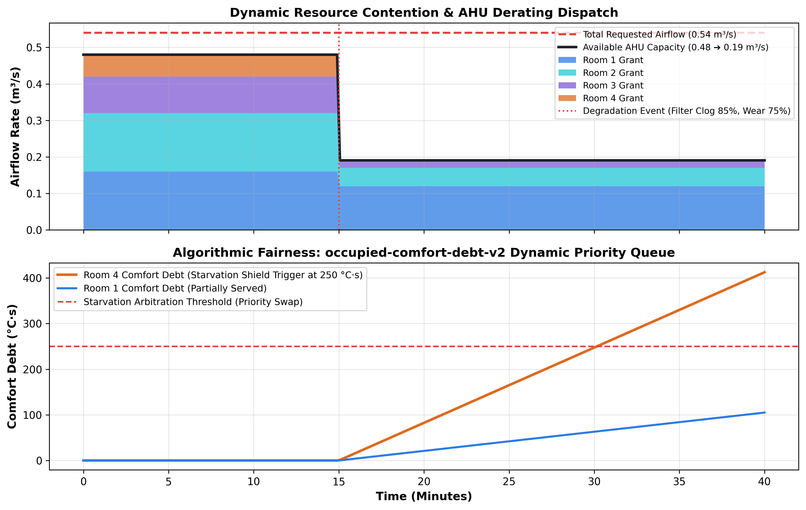
The web presentation layer provides complete real-time visibility across the Operations Centre Workspace:
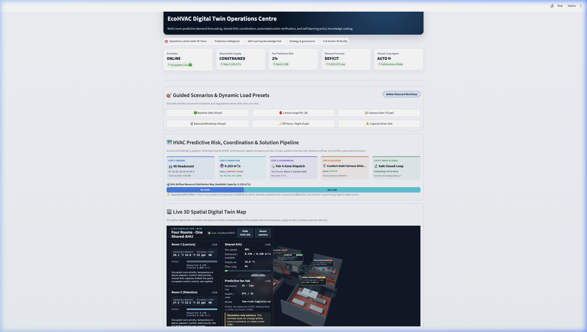
AUTO 🤖 vs HITL 👤).Baseline Safe, Lecture Surge, Campus Exam, Balanced Workshop, Night Off-Hours, and Capacity Stress Test) with a live pill badge displaying the active preset.Execute for ROOM1, Execute for ROOM2, Execute for ROOM3, Execute for ROOM4) enabling instant closed-loop intervention.room3d.html & Streamlit Tab 5)The 3D digital twin renders the entire 4-zone facility in real time:
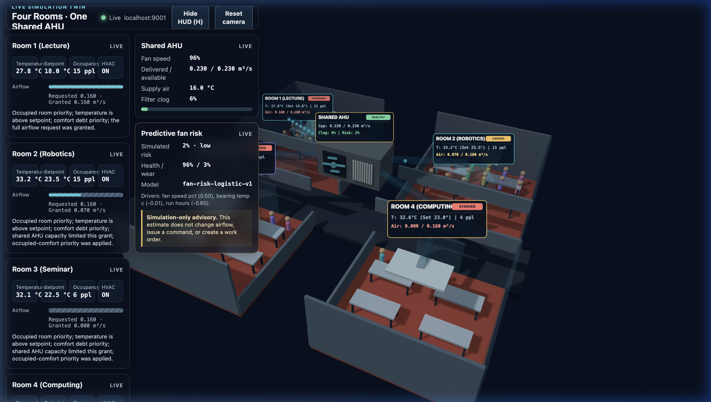
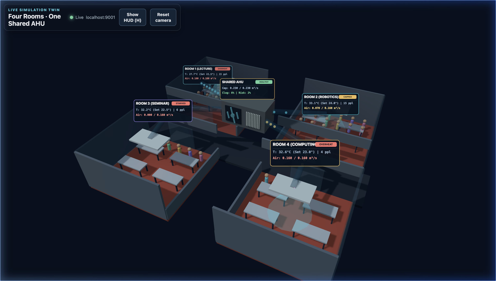
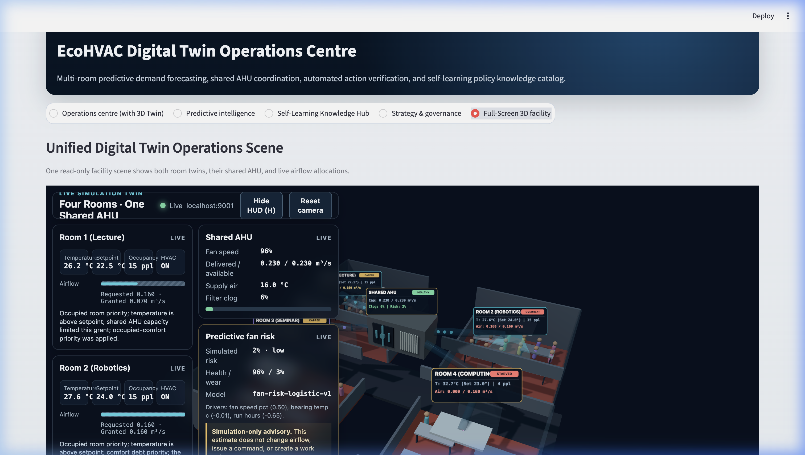
COOLING, STARVED, CAPPED, CRITICAL).H or click Hide HUD for an unobstructed full-screen 3D view.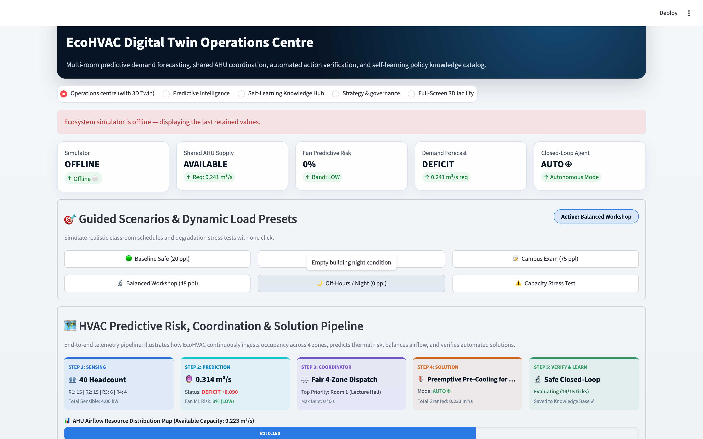
Closed-Loop Agent indicator card displays AUTO 🤖 with a glowing green status pill.LIVE EXECUTIONMode: AUTO 🤖, while Step 5 displays a live 15-tick physical response tracking progress bar (Evaluating Response: Tick X / 15).COOLING 🟢.| Operational Dimension | Autonomous Mode (AUTO 🤖) |
Human-in-the-Loop Mode (HITL 👤) |
|---|---|---|
| Execution Trigger | Real-time pattern match against the Approved Knowledge Catalog | Operator manual click (Execute for ROOM X / Maintenance Buttons) |
| Dispatch Latency | Instantaneous (< 50 ms) upon risk detection | Waits for human operator review and confirmation |
| Safety Governance | Hardcoded physical clamp bounds (18.0°C – 30.0°C, P ≤ 250 W) | Human engineer verifies operational suitability before execution |
| UI Notification | Prominent Green Notification Banner + High-Priority Browser Toast | Advisory badge + Manual action recommendation card |
| Pipeline Step 4/5 | Mode: AUTO 🤖 ➔ Live tick progress bar displayed |
Mode: MANUAL 👤 ➔ Waits for operator dispatch |
| Audit Ledger | Committed with actor: "AUTONOMOUS_AGENT_CLOSED_LOOP" |
Committed with actor: "OPERATOR_HITL" and reviewer notes |
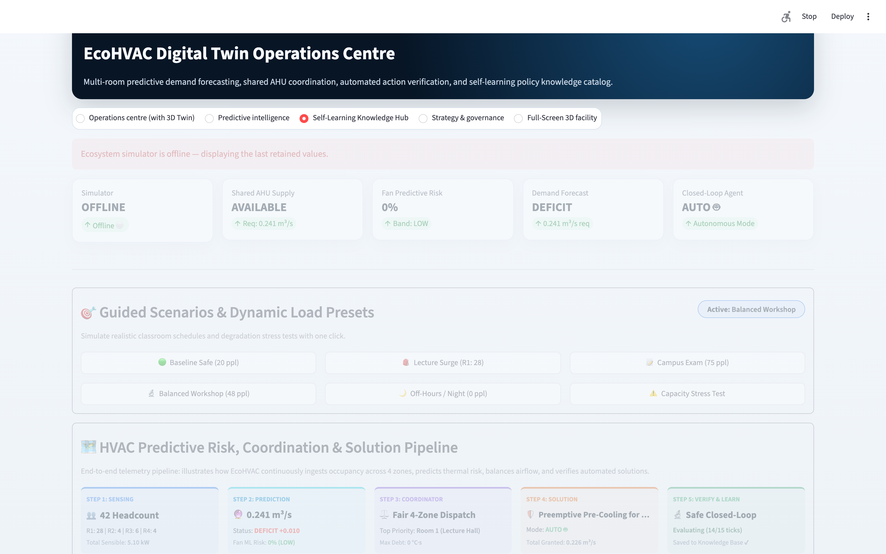
FACILITY-CHIEF-01) and the green ✅ Confirm & Approve / red ❌ Reject Policy buttons.occupied-comfort-debt-v2 policy guarantees that unserved rooms accumulate priority weight over time, ensuring equal comfort access across all student cohorts.simulator/audit.py) validates monotonic sequence IDs and timestamps, blocking duplicate or out-of-order control packet replay attacks over MQTT.Every state mutation, coordinator allocation, operator mitigation dispatch, and policy sign-off is committed to an immutable SQLite audit log using SHA-256 hash-chaining:
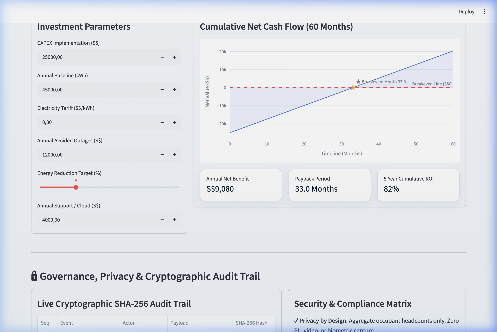
The Strategy & Governance Workspace integrates live sustainability metrics, policy simulation, and financial models:
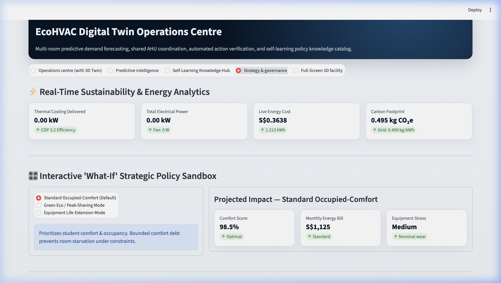
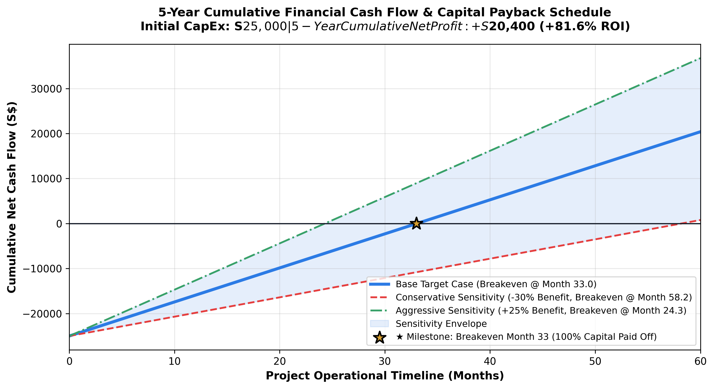
| Timeline Milestone | Cumulative Investment Outflow | Cumulative Gross Benefits | Cumulative OPEX Support | Cumulative Net Cash Flow | Financial Status |
|---|---|---|---|---|---|
| Month 0 (Kickoff) | -S25,000 | S0 | S0 | -S25,000 | Initial CAPEX Outlay |
| Month 12 (Year 1 End) | -S25,000 | +S13,080 | -S4,000 | -S15,920 | First-Year Net Yield -63.7% |
| Month 24 (Year 2 End) | -S25,000 | +S26,160 | -S8,000 | -S6,840 | Capital 72.6% Recouped |
| Month 33 (Breakeven ★) | -S25,000 | +S36,000 | -S11,000 | S0 | 100% Capital Paid Off |
| Month 36 (Year 3 End) | -S25,000 | +S39,240 | -S12,000 | +S2,240 | Net Positive Cash Flow |
| Month 48 (Year 4 End) | -S25,000 | +S52,320 | -S16,000 | +S11,320 | +45.3% Net Capital ROI |
| Month 60 (Year 5 End) | -S25,000 | +S65,400 | -S20,000 | +S20,400 | +81.6% 5-Year Cumulative ROI |
When software optimization reaches the physical cooling limit of the existing equipment (>0.550 m³/s total peak demand or severe thermal deficit with clean filters):
* EQUIPMENT_RETROFIT_ADVISORY Trigger: Formulated automatically with transparent engineering metrics:
| Retrofit Option | Equipment Specification | Estimated CapEx | Energy Savings / yr | Payback Period | Ideal Use Case |
|---|---|---|---|---|---|
| Option A: Central VAV AHU | 0.750 m³/s EC Plug Fan AHU | ~S12,500 | S6,800 / yr | 1.8 Years | Whole-wing high occupancy scaling |
| Option B: Dedicated Split Unit | 3.5 kW Inverter Split-Unit for Room 4 | ~S2,800 | S3,100 / yr | 11 Months | Targeted relief for high-density computing loads |
notebooks/fan_failure_prediction.ipynbfan_risk_logistic.json and validation metrics fan_risk_logistic.metrics.json.report/images/00_integrated_architecture.png and docs/architecture.md.report/pitch/EcoHVAC_Guardian_Project2_Pitch.pptx & .pdf.report/demo_script.md (5:30 timed walkthrough).report/demo_script_vi.md (5:30 timed walkthrough).| Architectural Layer | Core Capability Implemented | Technical & Mathematical Verification |
|---|---|---|
| Physics & Thermodynamics | 4-Zone Smart Wing multi-room heat balance (V = 100–200 m³, C_th = 300–600 kJ/K) with sensible occupant heating (100 W/person) and equipment biases. | Continuous Euler ODE thermal integration with VAV supply plenum cooling delivery (0.480 m³/s, T_supply = 16.0°C). |
| Predictive Intelligence | L2-regularized standardized Logistic Regression predicting 7-day mechanical fan motor failure risk, and forward thermal trajectory forecaster (+5m, +15m). | N = 2,400 synthetic operating episodes, holdout accuracy 80.42%, precision 74.80%, ROC-AUC 0.8449, Brier score 0.1467, and 30% OOD envelope protection. |
| Cyber-Physical Coordination | Centralized occupied-comfort-debt-v2 multi-zone resource allocator with anti-windup PID integral error bleed. |
Deterministic lexicographic priority queue preventing student room starvation and actuator oscillation during severe AHU derating. |
| Governance & Human Feedback | Self-learning policy lifecycle with 4-part automated verification test suite, Human-in-the-Loop engineering sign-off form, and zero-PII privacy design. | Candidate policies require 15-tick verification (≤ 1.0°C error, < 40% risk, ≤ 250 W, ≤ 20°C·s debt) and facility engineer approval before SHA-256 promotion. |
| Autonomous Closed-Loop | Dual-mode control architecture (AUTO 🤖 vs HITL 👤) executing verified knowledge base policies with live notification banners and toasts. |
Instantaneous (< 50 ms) pattern matching against approved SQLite catalog with strict physical clamp limits (18.0°C – 30.0°C, P ≤ 250 W). |
| Strategic ROI & Retrofit | 5-Year cumulative financial cash flow engine, 4-tier sensitivity matrix, and automated physical saturation retrofit advisor (AHU vs Split Unit). | Initial S25k CAPEX paid off at Month 33 Breakeven (★), delivering +S20,400 net profit (+81.6% 5-Year ROI). |
| 3D Spatial Digital Twin | Full Three.js WebGL spatial facility (room3d.html), dynamic holographic billboards, transparent ducts with flowing neon particles, diffuser jets, and distress beacon. |
Synchronized over MQTT/WebSockets (TCP 1883 / 9001) with live occupancy, airflow, temperature color coding, and HUD toggle. |